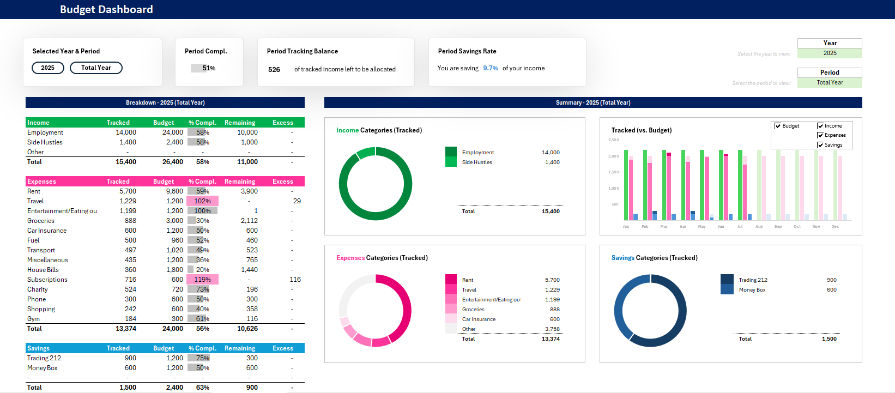
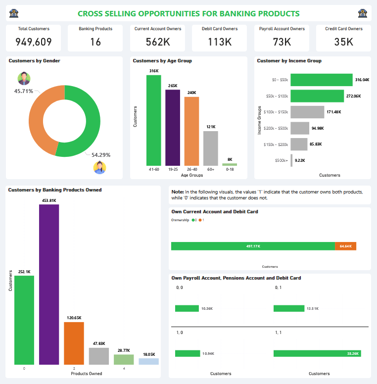
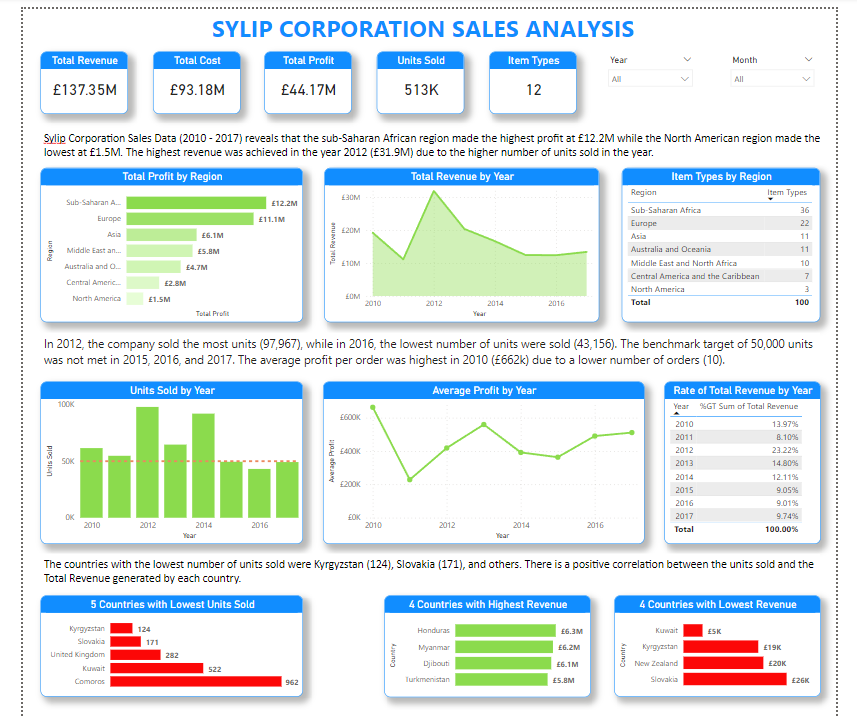
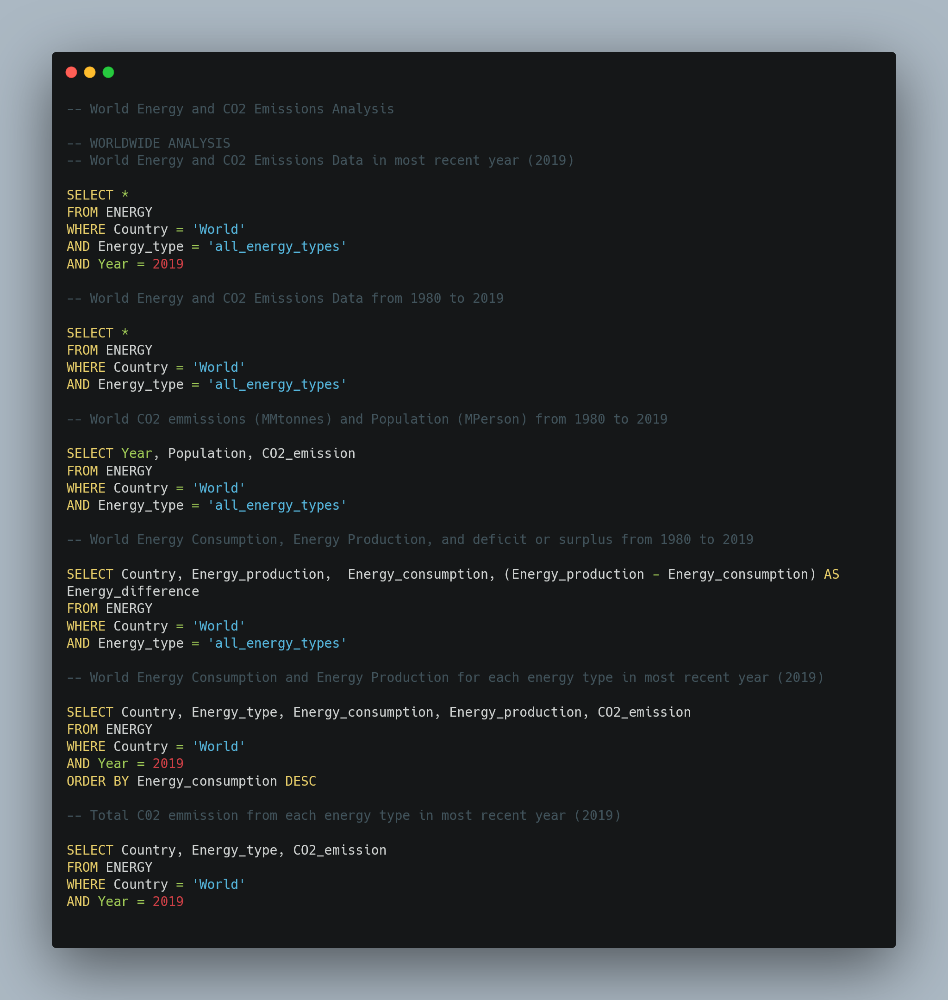
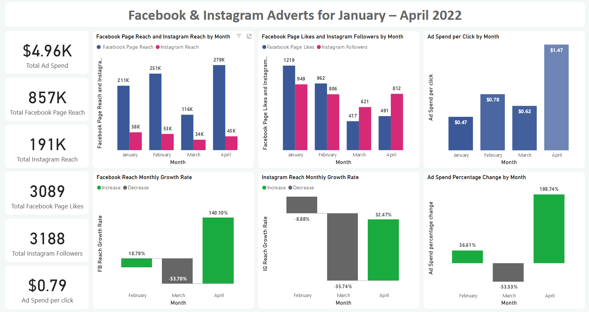
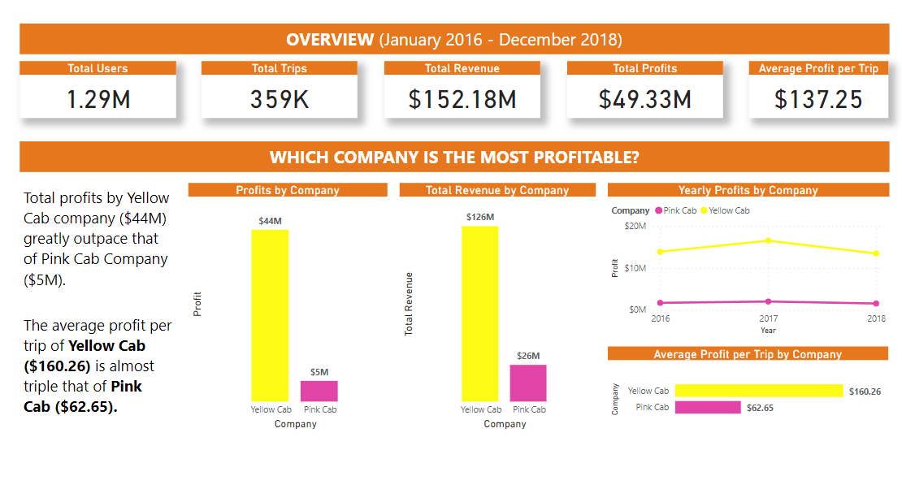
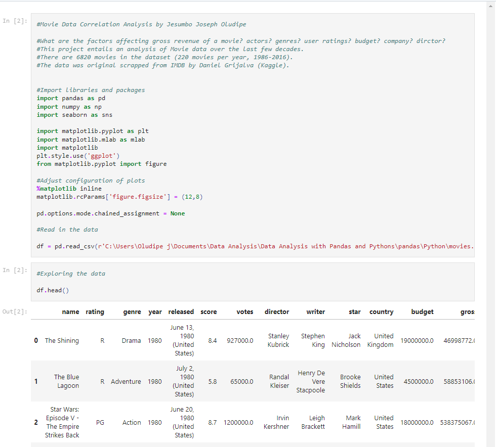
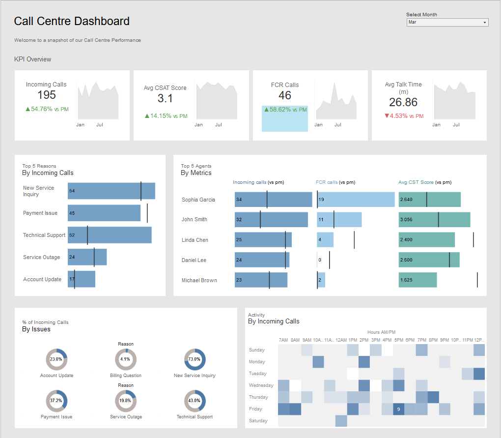

Data & Insights Analyst
Data Analyst specializing in transforming complex business problems into clear, actionable insights across utilities, finance, and digital marketing using Power BI, SQL, Python, Excel, Azure, and Databricks.
I'm a data analyst with over seven years of experience driving strategic insights and operational efficiency across water utilities, financial services, and digital marketing sectors.
Proficient in Excel, Python, SQL, Power BI, Databricks, and Azure Data Factory, I specialise in transforming complex business requirements into effective technical solutions, from optimising ETL pipelines to building executive dashboards that inform real decisions.
Currently working as a Data Analyst at Thames Water, delivering data-driven insights that support operations teams across the network.
Leveraged SQL, Power BI, Python, Azure Data Fcatory, and Databricks to deliver insights and ensure top-tier water supply and waste management services. Developed dashboards monitoring case resolution, leakage levels, and engineering processes across the water supply network, driving efficiency and operational excellence.
Led a team of five analysts overseeing delivery of 25+ Power BI dashboards, SQL reports, Power Apps, and business performance reports. Drove root cause analysis on operational issues, reducing customer complaints through early warnings. Collaborated with senior stakeholders to align analytics strategy with business goals and scaled organisational use of Power BI and Databricks.
Built optimised ETL pipelines using SQL Server, Azure Databricks, and Power BI. Identified dormant accounts generating £100k+ in additional revenue and implemented strategies to prevent account losses while reducing operational costs.
Led a team of analysts to optimise marketing campaigns, significantly improving ROI. Used SQL to analyse sales data and developed Python algorithms to analyse customer behaviour patterns, driving increased acquisition. Improved website performance via Power BI and Google Analytics.
Led strategic planning and financial analysis to drive revenue growth. Developed automated Excel templates for streamlined payroll management and designed user-friendly Power BI dashboards to enhance data accessibility for non-technical stakeholders.

Interactive Excel tool tracking income, expenses, and savings with dynamic KPIs, automated dashboards, and advanced logic for irregular pay schedules.
View Project →
In-depth analysis of 13.6 million customer records to uncover cross-selling opportunities across banking products.
View Project →
Uncovered profitability and performance insights for a multi-category retail company covering household items, groceries, and clothing.
View Project →
Comprehensive SQL analysis of global energy consumption and CO2 emissions revealing strong correlations across regions.
View Project →
Led a 5-person team analysing Facebook and Instagram KPIs — ad spend, reach, engagement, and monthly growth rates.
View Project →
Data-driven Power BI dashboard unveiling strategic opportunities and performance metrics across the US cab market.
View Project →
Exploratory correlation analysis on a movies dataset using pandas, numpy, seaborn, and matplotlib.
View on GitHub →
Interactive Tableau dashboard visualising call centre metrics — resolution rates, agent performance, and satisfaction trends.
View on Tableau →An introduction to sentiment analysis — how machines learn to understand human emotion and opinion from text data.
Read on Medium →A deep dive into using data to understand banking customers and unlock cross-selling strategies that drive revenue growth.
Read on Medium →Whether you have a data challenge to solve, a role to discuss, or just want to connect — I'd love to hear from you.